路径规划算法A*
原本想做一个两点之间生成折线的工具，知道今天才知道自己需要的是路径规划算法。是不是最终和图论有什么关系啊？
广度优先搜索
Breadth First 算法在树的遍历中也有应用。对于平面（空间）中的两个点，首先从起点开始，下一步遍历其周围的点，以此类推（跳过已经遍历过的点），知道抵达终点或者遍历完全部的点为止。由重点即可反推一条最短的路径。此算法的遍历过程像是水中的涟漪一样扩散。
Dijkstra 算法
如果每一个节点移动的代价不相等（如山地、高速），此算法优先遍历距离起点代价最低的节点。所以需要一个优先级队列来存储每个节点距起点的总代价。
如果图形是网格图，且节点之间的代价相同，则Dijkstra 算法退化为广度优先。
最佳优先搜索
然而我们可以预估每个节点到终点的距离，虽然不一定准确，但可以为路径规划提供重要的参考。
这时我们需要另外一个优先级队列，来存储每个节点到终点的预计代价和。在每次遍历时始终选择移动到终点代价最小的那个。就像始终有根绳子连着终点一样，该算法就被称为最佳优先搜索（Best First），但看起来对不同代价分布不均的情况想过不好。
A* 算法
A* 算法相当于结合了Dijkstra 和最佳优先算法，每个节点的优先级被表示为：f(n) = g(n) + h(n)。其中：
f(n)是节点n 的综合优先级，值越小优先级越高g(n)是节点n 距离起点的总代价h(n)是节点n 距离终点的预计代价，也被称作启发函数
A* 算法在遍历节点时，会优先选择综合优先级最高的。并且需要两个集合来分别存储已经遍历过的节点和待遍历的节点。

可以理解为A* 总是会寻找离终点最近的点，并且选择该点距起点最短（代价最小）的路径
启发函数
启发函数会影响A* 的行为，可以根据需要灵活调整
- 启发函数为0，则算法退化为Dijkstra 算法
- 启发函数始终小于节点n 到终点的代价，则算法一定能找到最短路径，相应地，也需要遍历更多的节点
- 启发函数完全等于节点n 到终点的代价，但并不总是存在最理想场景
- 启发函数大于节点n 到终点的代价，此时算法速度会变快，但不能保证路径最短
- 启发函数远大于节点n 到终点的代价，算法退化为最佳优先搜索
关于启发函数
一般考虑每个节点的代价均为D，计算某一点
(x,y)到终点的(m,n)代价，有如下常用方式
- 曼哈顿距离。图形只允许上下左右四个方向移动，则总代价为
D*(|m-x|+|n-y|) - 对角距离。图形允许沿对角线移动，则总代价为
D*(|m-x|+|n-y|) + (D2 - 2*D)*min(|m-x|, |n-y|)。其中D2为两个对角节点间的移动代价 - 欧几里得距离。图形允许向任意方向移动，总代价为
D*sqrt((m-x)^2 + (n-y)^2)
有用的优化
- 使用二叉堆来保存open_set
- 给
g(n)增加一定的奖惩参数，来使算法生成的路径更加平滑
A* 算法的变种
- ARA
- D*
- Field D*
- Block A*
- 等等